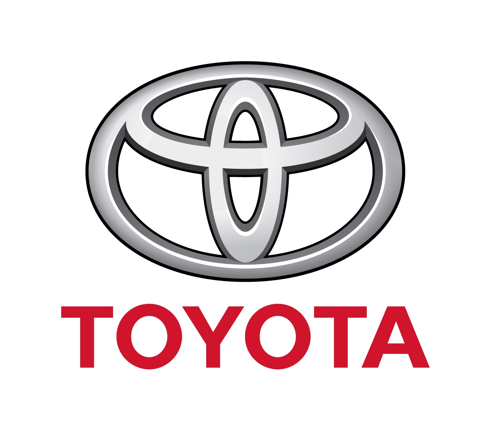
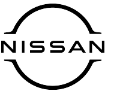
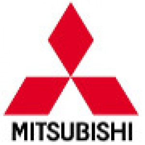
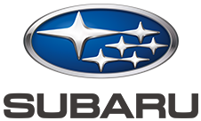

A Toyota 1937-ben alakult ki a Toyoda család textilipari gépgyártó cégéből. A II. világháború után Japán gazdasága újraépült, és a Toyota költséghatékony, kis fogyasztású autóival gyorsan népszerű lett. Megalkották a híres "Toyota Production Systemet", amely a világ egyik leghatékonyabb gyártási rendszere lett. Modellek, mint a Corolla, robbanásszerű sikerrel hódították meg Japánt, majd a világot.

1933-ban alakult meg a Nissan Motor Co., és gyorsan Japán egyik első számú autógyártójává vált. A Datsun 510 és a Fairlady Roadster voltak a korai sikermodellek. Az export-orientált gondolkodás miatt a Nissan hamar megjelent az amerikai és európai piacon is. Megszületett a Z-széria (240Z, 280Z, 300ZX), amely óriási nemzetközi siker lett. A Skyline GT-R (különösen az R32, R33, R34) a motorsportban és az utcán is legenda lett. Ezek a modellek lettek a JDM kultúra alapkövei.

A Mitsubishi Heavy Industries 1917-ben gyártotta Japán első sorozatgyártású autóját (Model A). Kezdetben főként teherautók, buszok és repülőgépek voltak fókuszban. A háború után a Mitsubishi Motors különvált, és 1960-tól kezdett tömegesen személyautókat gyártani. Olyan modellek jelentek meg, mint a Mitsubishi 500 és a Colt, később pedig a Galant. Erős mérnöki háttér miatt a technológiai fejlesztés már korán kiemelkedő volt.

A Subaru anyavállalata, a Fuji Heavy Industries repülőgépgyártóként indult. 1954-ben jött az első autó prototípusa (Subaru 1500), majd 1958-ban a Subaru 360 - Japán első "népautója", egy kis méretű Kei-car. Subaru korán elkezdte használni a boxermotort (vízszintesen fekvő hengerek), ami alacsonyabb súlypontot és jobb stabilitást adott. Kiemelkedő lépés volt az állandó összkerékhajtás (AWD) bevezetése - ezzel a Subaru külön kategóriát teremtett. Ezek a jellemzők hamar népszerűvé tették Japán hegyes, havas vidékein.